Full animated screenplay • 3–4 minutes • Pixar-quality 3D • 8 voice actors
Black screen. A single cyan dot pulses like a heartbeat. It sends a line of light to another dot. A web of glowing connections grows across the screen — an underground network seen from above, like a constellation in the soil.
NARRATOR (V.O.):
Beneath every forest… there's a secret.
The network pulses with warm amber light. The camera pulls back — the network stretches as far as we can see.
NARRATOR (V.O.):
A network older than dinosaurs. Bigger than the internet. And today, two kids are about to find it.
SMASH CUT to bright sunlight. TITLE CARD: MY FUNGAL ADVENTURE
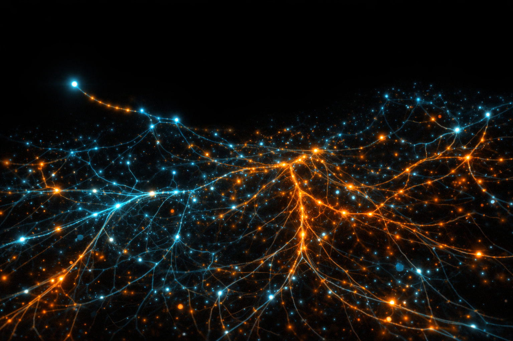
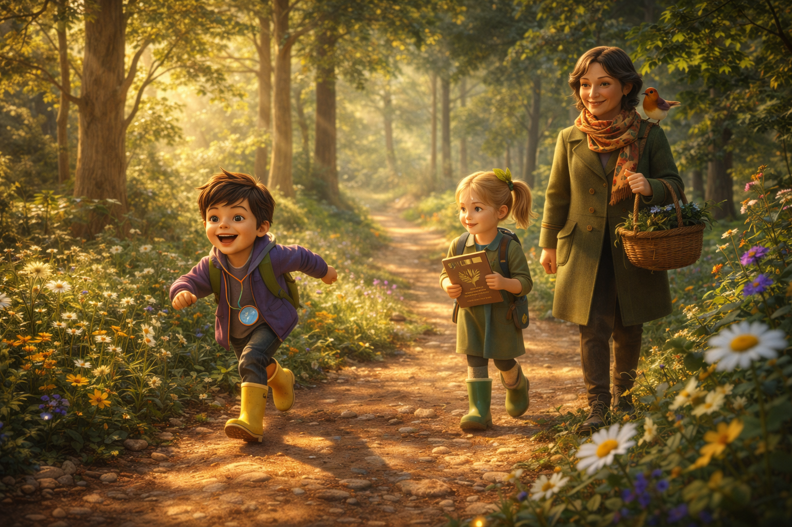
A sun-dappled forest trail. Three figures walk: BIRCH (8, magnifying glass), FERN (7, nature journal), and MS. HAWTHORN (ageless, olive coat, robin on shoulder).
BIRCH:
(running ahead, looking through magnifying glass)
Ms. Hawthorn! What's THAT mushroom? The one with the spots?
MS. HAWTHORN:
(warmly)
That's an amanita, Birch. Beautiful, isn't it? Fungi are some of the oldest living things on Earth.
FERN:
(writing in her journal, not looking up)
How old?
MS. HAWTHORN:
Older than trees. Older than flowers. They were here before almost everything else.
FERN:
That's… really old.
MS. HAWTHORN:
(smiling, glancing toward something off-trail)
And they've been busy the whole time.
ADULT HINT: Flowers along the trail lean subtly toward her as she passes.
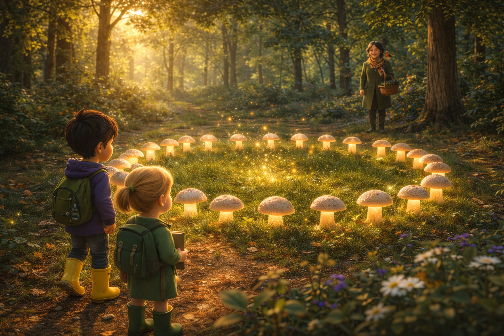
Birch pushes through a fern frond and stops. A perfect circle of mushrooms, each cap glowing faintly. Tiny motes of golden light drift from the center.
FERN:
(eyes wide)
A fairy ring. They're real.
BIRCH:
And it's… glowing.
MS. HAWTHORN:
Go ahead. Some things you have to discover for yourselves.
ADULT HINT: Ms. Hawthorn smiles BEFORE the ring glows brighter. She never enters the clearing.
BIRCH:
Ready?
FERN:
(clutching her journal)
Ready.
They step inside. A deep, resonant TONE — like a singing bowl crossed with a heartbeat. Golden light envelops them.
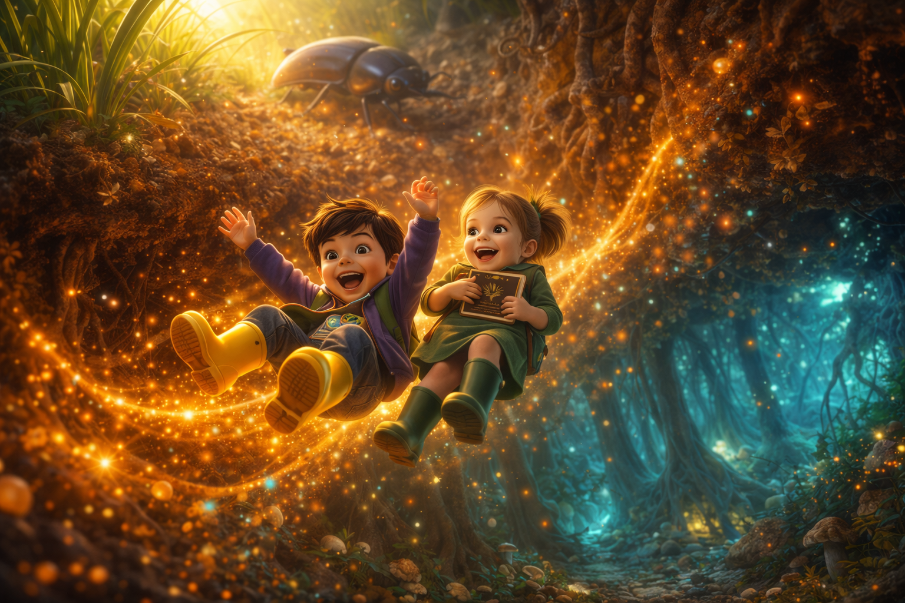
DYNAMIC SEQUENCE. The world expands around them. Grass blades shoot up like redwoods. A beetle trundles past, now car-sized. Colors shift from warm greens to deep amber to cyan-teal below. They tumble through soil, past roots and tiny creatures, wrapped in golden light.
FERN:
(laughing, falling through golden light)
We're shrinking!
BIRCH:
(delighted)
We're REALLY shrinking!
They land on a bed of mycelium threads in an enormous underground cavern. Tree roots descend like cathedral columns. Threads pulse with cyan and teal light everywhere.
FERN:
(barely a whisper)
Where are we?
FUN-GUS (O.S.):
Welcome to the network!
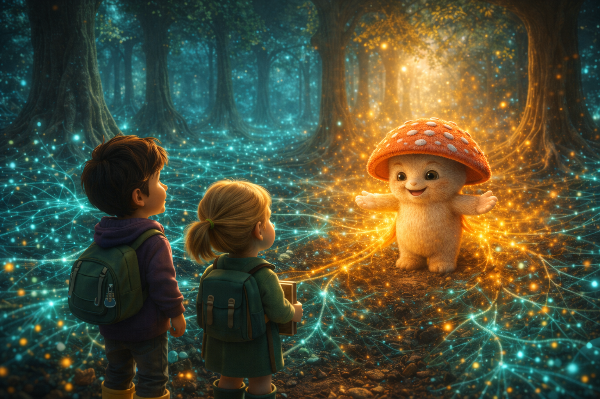
FUN-GUS steps into the light. Three feet tall, warm red-orange cap with white spots, cream body, blue sash, kind glowing eyes. He walks with a gentle bounce.
FUN-GUS:
(warm, enthusiastic)
I'm Fun-Gus! And you — you found the fairy ring! Not many surface-dwellers do.
BIRCH:
What IS this place?
FUN-GUS:
(gesturing grandly)
This… is Sillium. The oldest, biggest network on the planet.
He traces a glowing thread. Light pulses race away in both directions.
FUN-GUS:
See these threads? Each one is a conversation. Trees talking to each other. Sharing food. Sending warnings.
FERN:
(scribbling furiously)
Trees… talk?
FUN-GUS:
They don't use words. They use chemistry. Tiny signals traveling through threads like these — for HUNDREDS of miles in every direction.
Camera reveals the vast scope. Threads stretching everywhere, pulsing with light. Like a living galaxy underground.
FUN-GUS:
Scientists call it the "Wood Wide Web." We just call it home.
FUN-GUS:
But today, we have a problem. A little seedling is losing its connection. If we don't help, it'll be cut off from the whole forest. Want to help?
BIRCH:
Yes!
FERN:
(closing her journal with purpose)
Absolutely.
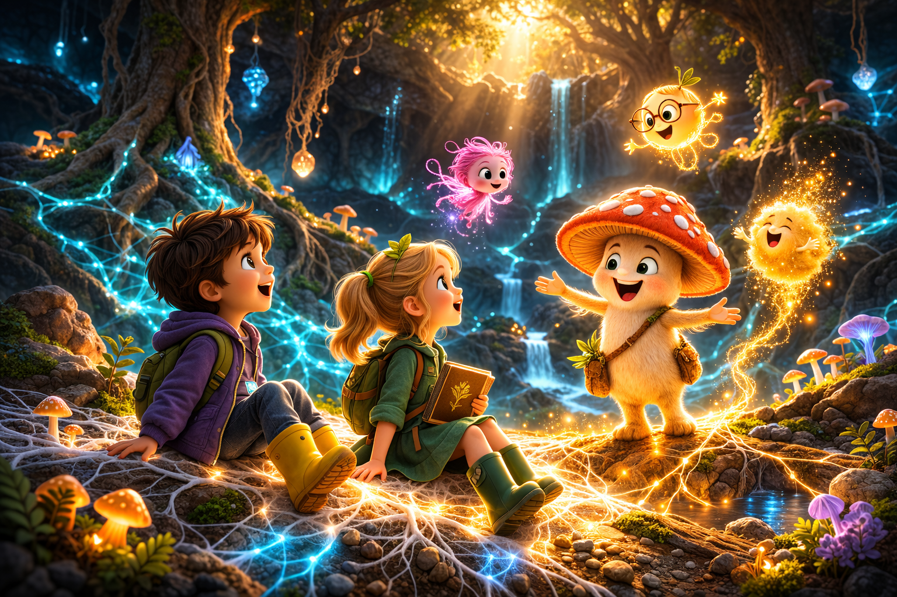
Fun-Gus leads them along the fading thread. Quick introductions as they meet network members.
SEQUENCE A — SPORA
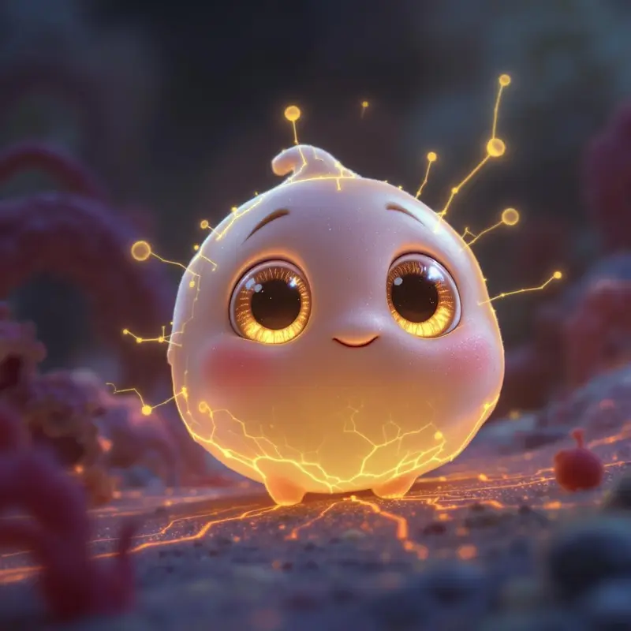
A tiny squeak from behind a root. SPORA floats into view — tiny, pale pink-white, enormous amber eyes.
SPORA:
(barely audible)
I'm Spora. I'm new. I don't know how to do anything yet.
FUN-GUS:
(gently)
That's where everyone starts.
SEQUENCE B — LUMOS
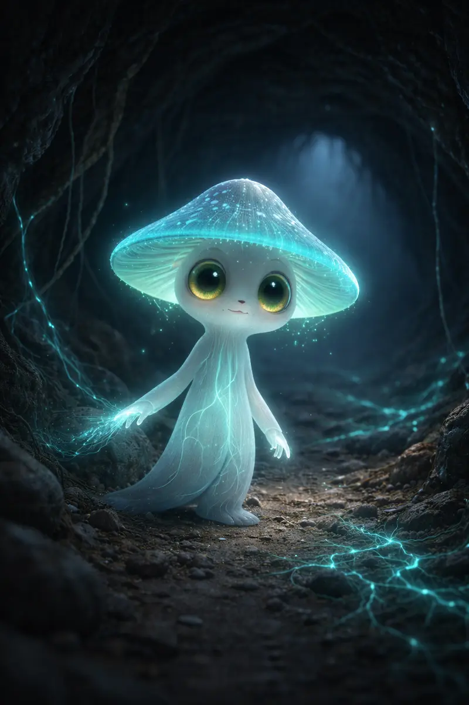
The path goes dark. A trembling blue-green glow appears.
LUMOS:
(nervous but trying)
I'm Lumos. I light the way. I get brighter when I'm scared. Which is… a lot.
FERN:
Being brave doesn't mean you're not afraid.
Lumos glows brighter. Dormant threads re-illuminate in his wake.
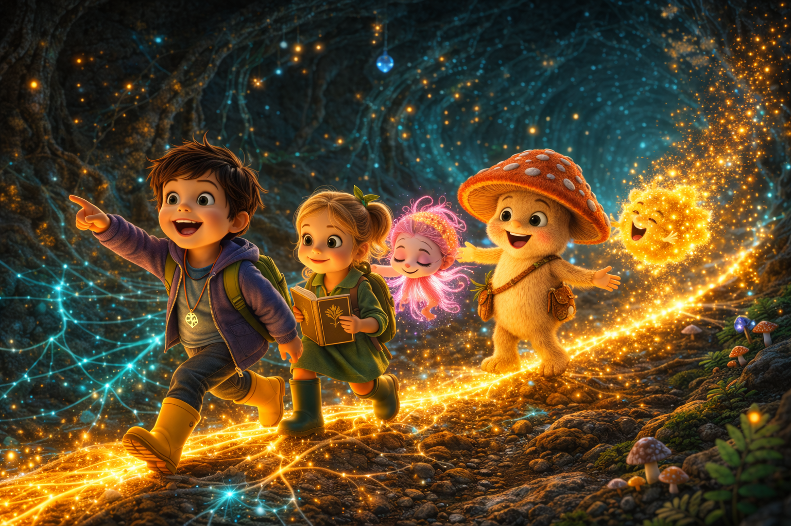
SEQUENCE C — PUFF
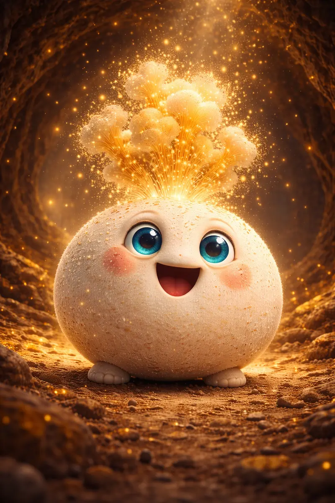
A round, rosy creature BOUNCES toward them — and BURSTS in a cloud of golden spores.
PUFF:
(ecstatic)
Sorry! I just get so EXCITED!
Birch laughs. Fern sneezes. Spora peeks out, delighted.
NARRATOR (V.O.):
Each one different. Each one essential. And each one part of something bigger than themselves.
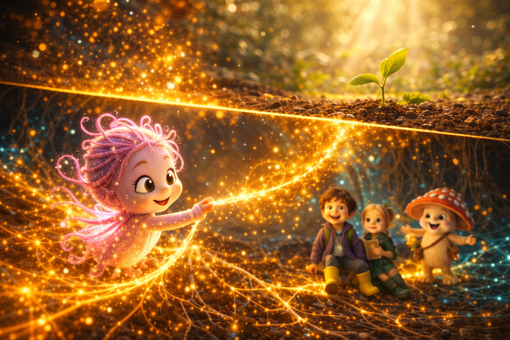
They reach the struggling seedling. Pale roots, barely connected. A single thread sputters.
FUN-GUS:
This seedling needs us. All of us.
MONTAGE: Lumos illuminates. Puff broadcasts the call. Fun-Gus coordinates. But the connection isn't complete. Everyone looks at Spora.
SPORA:
(panicking)
Me? But I — I'm too small. I don't know how.
FUN-GUS:
(kneeling to her level)
You don't have to be big, Spora. You just have to try.
Spora trembles. Her filaments flicker. She reaches out one tiny tendril and touches the fading thread.
SFX: A deep, warm TONE. Spora's filaments STABILIZE — glowing warm amber-gold. A pulse of golden light races through the entire network. Every thread blazes to life. The seedling's roots fill with color. Above ground, a tiny new leaf unfurls.
FUN-GUS:
(beaming)
See? The network doesn't need you to be big. It needs you to be YOU.
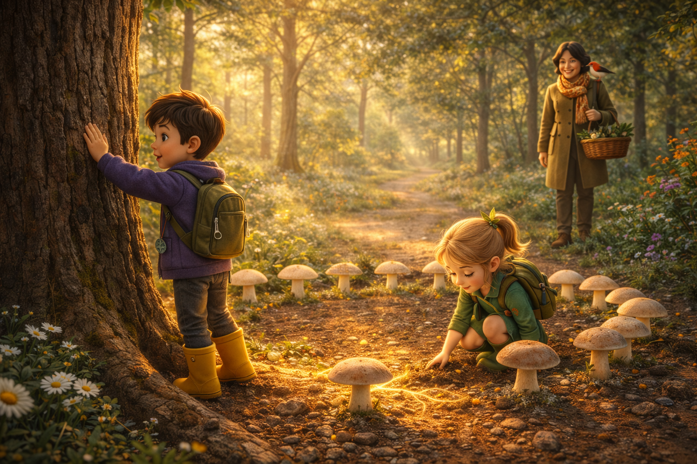
Fun-Gus guides them back to the fairy ring entrance. Golden light swirls. They grow. Same forest, same afternoon light. The fairy ring is just ordinary mushrooms now. Ms. Hawthorn waits, smiling.
MS. HAWTHORN:
(knowingly)
Well? How was it?
BIRCH:
(pressing his hand against an old oak)
The forest was talking this whole time.
FERN:
(kneeling, touching the soil)
We just couldn't hear it.
ADULT HINT: The robin returns. She hums an ancient melody. She doesn't seem surprised by anything they say.
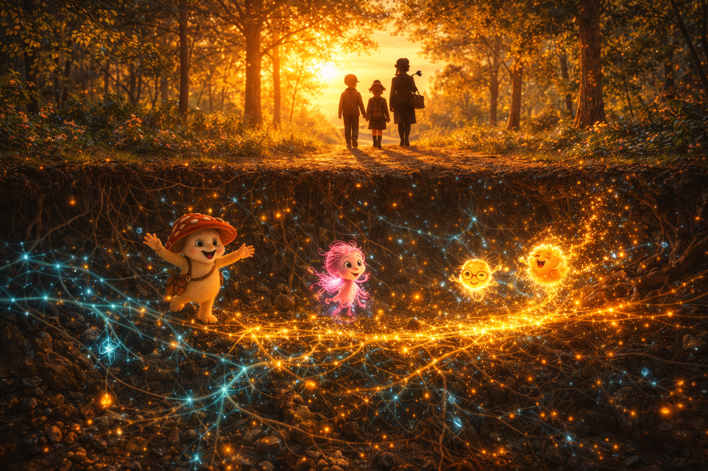
Wide shot — three figures walking away, silhouetted against golden sunset. Camera pushes DOWN through the forest floor into the network. Fun-Gus waving, Spora glowing, Lumos lighting a path, Puff mid-burst. Connected.
NARRATOR (V.O.):
Beneath every forest, there's a network. It's been there for 450 million years. Connecting. Sharing. Talking.
You just have to know where to look.
TITLE CARD: FUN-GUS: THE FOREST HAS WIFI
END CARD: "The underground fungal networks in this story are real. Scientists call them mycorrhizae — and they connect over 90% of all plants on Earth. Next time you're in a forest, remember: there's a whole internet beneath your feet."
| Element | Detail |
|---|---|
| Runtime | 3:45–4:00 |
| Resolution | 1920x1080 (16:9) |
| Animation Style | Pixar-quality 3D, warm lighting |
| Voice Actors | Narrator, Fun-Gus, Spora, Birch, Fern, Ms. Hawthorn, Lumos, Puff (8 voices) |
| Music Cues | 4 (Forest, Shrinking, Sillium, Resolution) |
| SFX Design | Nature ambience, network hum, fairy ring tone, shrinking sequence, spore burst |
| Character | Scenes | Lines |
|---|---|---|
| Birch | 1–8 | 5 |
| Fern | 1–8 | 5 |
| Ms. Hawthorn | 1–2, 7 | 3 |
| Fun-Gus | 4–7 | 8 |
| Spora | 5–6 | 2 |
| Lumos | 5 | 1 |
| Puff | 5 | 1 |
| Narrator | Cold open, 5, 8 | 4 segments |